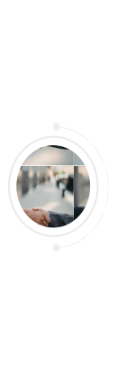
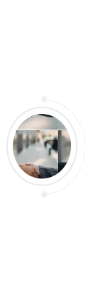

Основні види послуг
Вирішення спорів
Корпоративне & податкове право
Земельне & аграрне право
- Досудове вирішення спорів
- Вирішення спорів в судах загальної юрисдикції
- Міжнародний комерційний арбітраж
- Виконання рішень українських та іноземних судів
Цивільні спори:
cпадкові спориcтягнення коштів
витребування майна
визнання права власності
захист честі
гідності та ділової репутації
Господарські спори:
стягнення коштіввитребування майна
визнання права власності
корпоративні спори
спори щодо укладення/виконання
господарських договорів
захист ділової репутації.
Адміністративні спори:
з органами державної влади та/або місцевого самоврядування з податковими органами (скасування податкових повідомлень-рішень, рішень про визначення митної вартості, податкових вимог, податкової застави, стягнення надміру сплачених до бюджету коштів тощо).- Супроводження заснування бізнесу в Україні
- Супроводження діяльності юридичних осіб та ФОП
- Супроводження припинення бізнесу
- Супроводження перевірок
реєстрація ФОП, юридичних осіб, представництв
побудова корпоративної структури
реєстрація іноземних інвестицій
розробка статутних документів
побудова корпоративної структури
реєстрація іноземних інвестицій
розробка статутних документів
проводження укладення ліцензійних договорів, договорів франчайзингу та інших договорів
складання, супровід укладення, юридичний аналіз різних видів господарських договорів
консультування з податкових аспектів, спадкування, дарування, відчуження майна
супроводження проведення загальних зборів учасників/акціонерів
вхід/вихід учасників, збільшення/зменшення статутного капіталу
розробка локальних актів юридичної особи
реєстрація прав інтелектуальної власності
абонентське обслуговування
супроводження проведення загальних зборів учасників/акціонерів
вхід/вихід учасників, збільшення/зменшення статутного капіталу
розробка локальних актів юридичної особи
реєстрація прав інтелектуальної власності
абонентське обслуговування
супроводження перетворення або припинення юридичних осіб
супроводження припинення ФОП
супроводження припинення ФОП
аналіз законності і обґрунтованості вимог контролюючих органів
підготовка заперечень на акти перевірок
підготовка відповідей на запити
формування правової позиції
підготовка заперечень на акти перевірок
підготовка відповідей на запити
формування правової позиції
- Оформлення права користування чужою земельною ділянкою для сільськогосподарських потреб (емфітевзис)
- Оформлення права користування землею без розроблення землевпорядної документації
- Реєстрація поділу/об’єднання земельних ділянок в Державному земельному кадастрі
- Оформлення прав на землю у зв’язку з переходом права власності на нерухомість
- Реєстрація частини земельної ділянки, на яку поширюється право суборенди
- Поновлення договору оренди та укладення договору оренди на новий строк
- Оформлення права сервітуту на землю (у т. ч. на частину земельної ділянки)
- Вирішення судових спорів, повʼязаних із земельними правовідносинами
- Оформлення прав (власності/оренди) на землю на земельних торгах
- Реєстрація земельної ділянки в Державному земельному кадастрі
- Отримання грошової оцінки землі (нормативна, експертна)
- Оформлення права користування на земельну ділянку
- Оформлення права постійного користування землею
- Зміна цільового призначення земельної ділянки
- Оформлення договору оренди/суборенди землі
- Оформлення права власності на землю
- Укладення договору емфітевзису
- Укладення договору суперфіцію
- Підготовка та супровід укладення договорів, пов’язаних із експлуатацією нерухомого майна
- Підготовка та супровід підписання договорів, направлених на розпорядження майном
- Супровід реєстрації декларації про готовність об’єкту будівництва до експлуатації
- Супровід оформлення права оренди об’єкта комунальної/державної власності
- Отримання містобудівних умов та обмежень забудови земельної ділянки
- Супровід отримання будівельного паспорта забудови земельної ділянки
- Супровід врахування інтересів Клієнта в містобудівній документації
- Отримання містобудівних умов та обмежень земельної ділянки
- Підготовка та супровід укладення інвестиційного договору
- Супровід оформлення права на тимчасову споруду
- Державна реєстрація прав на нерухоме майно
- Перевірка ризиків забудовника
- Будівельна амністія
- Рекомендації щодо документального оформлення прийому на роботу та звільнення
- Юридичний супровід трудових спорів
- Розробка посадових інструкцій
- Розробка всіх необхідних документів:
форми наказів про прийом, звільнення, переведення
форми наказів відпустки, відрядження
посадові інструкції
трудові договори
договори про повну матеріальну відповідальність
журнали обліку
- Захист прав інтелектуальної власності (GDPR-compliance, DPIA, NDA)
- Відкриття банківських рахунків та мерчант-аккаунтів
- Підготовка інвестиційних документів для стартапів
- Супровід відкриття компаній у різних країнах
- Ліцензування окремих видів діяльності
- Редоміциль компаній
 
